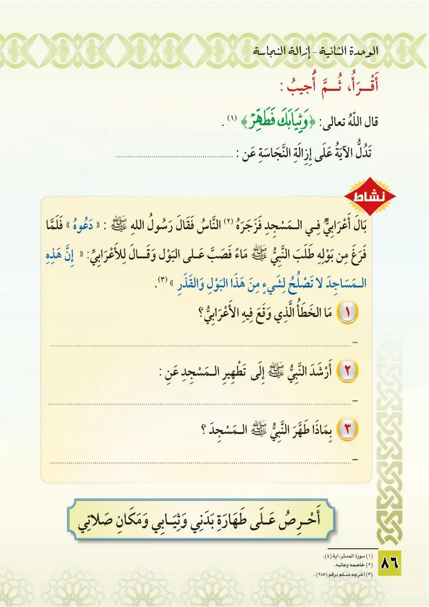
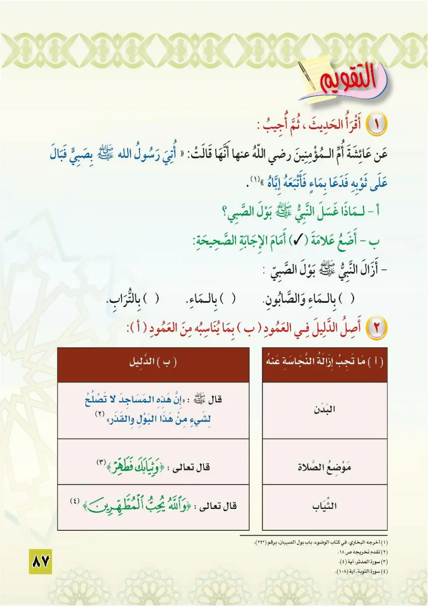
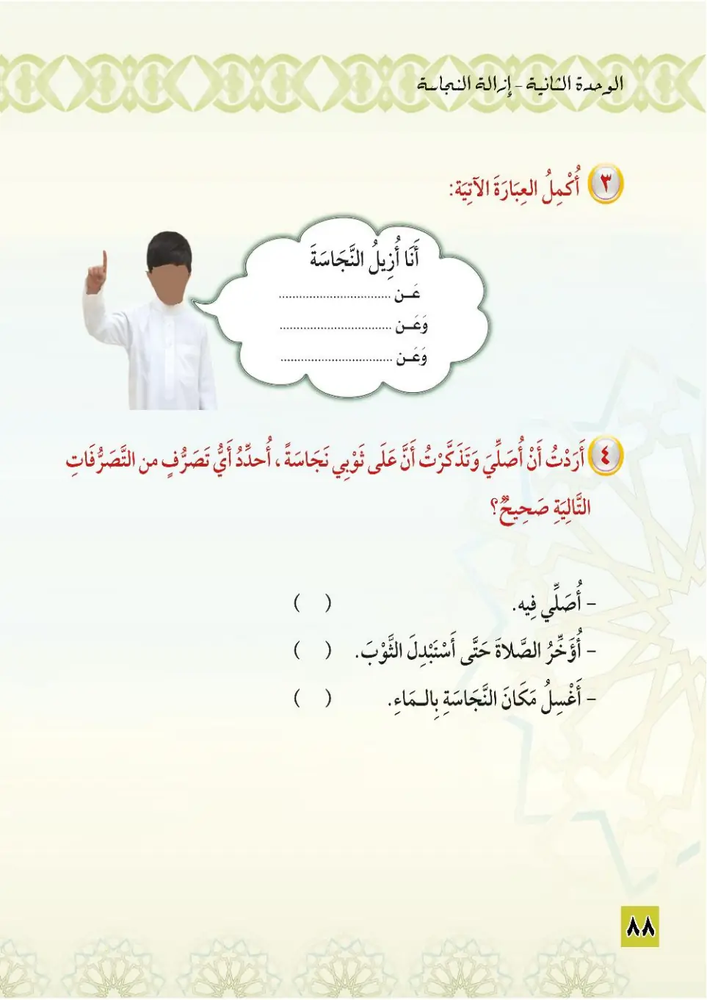

Stage 3·المرحلة الثالثة💧 Unit 2
إِزَالَةُ النَّجَاسَةِ Removing Impurity
From the Textbookpp. 87–89



﴿وَثِيَابَكَ فَطَهِّرْ﴾
Wa thiyabaka fat-ahhir.
Cleanse your garments.
உன் ஆடைகளைத் தூய்மைப்படுத்துவீராக.
رَأَى النَّبِيُّ ﷺ أَعْرَابِيًّا يَبُولُ فِي الْمَسْجِدِ، فَقَالَ: «دَعُوهُ»، حَتَّى إِذَا فَرَغَ دَعَا بِمَاءٍ فَصَبَّهُ عَلَيْهِ. أَخْرَجَهُ الْبُخَارِيُّ وَمُسْلِمٌ.
Ra'a an-nabiyyu ﷺ a'rabiyyan yabulu fil-masjidi fa-qala: «Da'uhu», hatta idha faragha da'a bima'in fasabbahu 'alayhi. Akhrajahu al-Bukhari wa Muslim.
The Prophet ﷺ saw a Bedouin urinating in the mosque and said: "Leave him." When the man finished, he called for water and poured it over the urine. Narrated by al-Bukhari and Muslim.
பள்ளிவாசலில் சிறுநீர் கழிக்கும் கிராமவாசியை நபி ﷺ கண்டார்கள்; "விடுங்கள்" என்று கூறி, முடிந்ததும் தண்ணீர் வரவழைத்து அதன் மேல் ஊற்றினார்கள். (புகாரி, முஸ்லிம்)
أُحَافِظُ عَلَى طَهَارَةِ بَدَنِي وَثِيَابِي وَمَكَانِ صَلَاتِي. إِزَالَةُ النَّجَاسَةِ وَاجِبَةٌ عَنْ ثَلَاثَةِ أَشْيَاءَ: ١- الْبَدَنِ. ٢- الثِّيَابِ. ٣- مَكَانِ الصَّلَاةِ.
Uhafizhu 'ala taharati badani wa thiyabi wa makani salah. Izalatu an-najasah wajibatun 'an thalathat ashyal: al-badan, ath-thiyab, makanu as-salah.
I take care of the purity of my body, my clothes and my place of prayer.
Removing impurity is obligatory from three things:
1. The body.
2. The clothes.
3. The place of prayer.
என் உடல், ஆடைகள், தொழுமிடம் ஆகியவற்றின் தூய்மையைக் காத்துக்கொள்கிறேன்.
மூன்று விஷயங்களிலிருந்து நாஜஸை நீக்குவது கடமை:
1. உடல்.
2. ஆடைகள்.
3. தொழுமிடம்.
عَنْ عَائِشَةَ رَضِيَ اللهُ عَنْهَا قَالَتْ: أُتِيَ النَّبِيُّ ﷺ بِصَبِيٍّ فَبَالَ عَلَى ثَوْبِهِ، فَدَعَا بِمَاءٍ فَأَتْبَعَهُ إِيَّاهُ. أَخْرَجَهُ الْبُخَارِيُّ.
'An 'A'ishata radiyallahu 'anha qalat: utiya an-nabiyyu ﷺ bi-sabiyyin fabala 'ala thawbihi, fada'a bima'in fa-atba'ahu iyyahu. Akhrajahu al-Bukhari.
Aisha, may Allah be pleased with her, said: "A child was brought to the Prophet ﷺ and it urinated on his garment, so he called for water and poured it over the soiled place." Narrated by al-Bukhari.
ஆயிஷா (ரழியல்லாஹு அன்ஹா) கூறினார்கள்: நபி ﷺ அவர்களிடம் ஒரு குழந்தை கொண்டுவரப்பட்டது; அது அவர்களின் ஆடையில் சிறுநீர் கழித்தது; தண்ணீர் வரவழைத்து அதன் மீது ஊற்றினார்கள். (புகாரி)